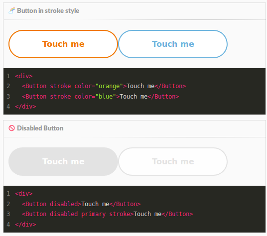
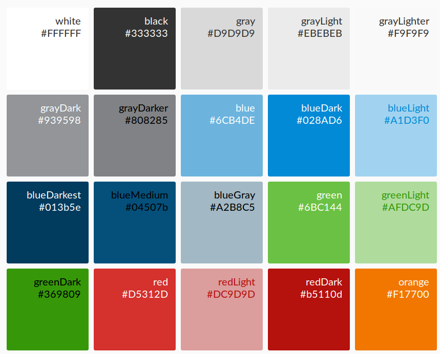
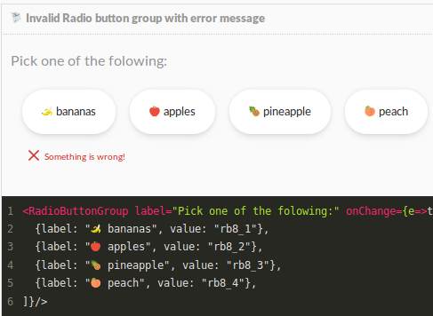
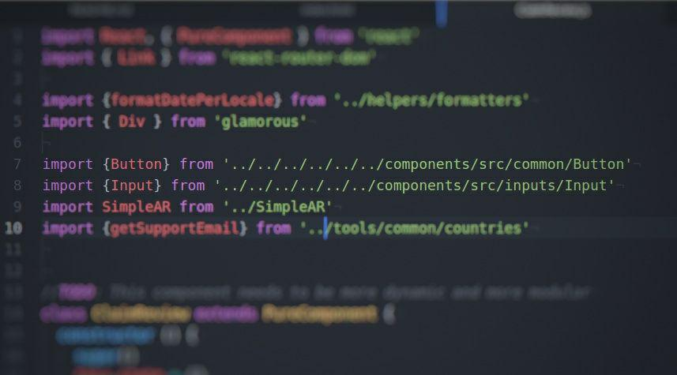
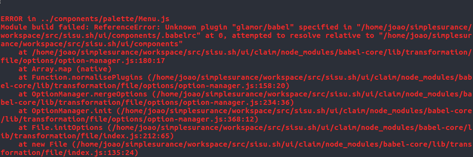

Sharing React JS code
in a monorepo project
João Lopes
Software Developer
Monorepo? What is that?
Why would you do that?
- 1 repository for all apps
- always sychronized
- single review point
- cheaper refactoring
- frictionless modularity
Our case. Sisu's stack
MVC Apps
APIs


Microservices
Misc Tools

Frontend Apps

The case for splitting frontend apps
- Multiple single page applications
- Distinct target audiences
- Better modularity
- Better use of developers' time
Advantages of sharing frontend code
  What code to share
- reusable, encapsulated bits of code
- inputs controllers
- buttons, cards, headings
- styles and effects
- layouts, page structure
- images, fonts, translations or other assets
How we put it together
-
ui ├─app1 ╎ └─... ├─app2 ╎ └─src ╎ └─components ╎ ├─navigation ╎ ├─forms ╎ └─... └─components ├─index.js └─src ├─common ╎ ├─Button ╎ ├─Panel ╎ └─... ├─config ├─colors ├─icons └─... -
ui contains all apps and the shared components directory.
components contains all the shared code neatly organized
The problem
How we put it together
-
ui ├─app1 ╎ └─... ├─app2 ╎ └─src ╎ └─components ╎ ├─navigation ╎ ├─forms ╎ └─... └─components ├─index.js └─src ├─inputs <-- ├─common ├─config ├─colors ├─icons └─... -
ui contains all apps and the shared components directory.
components contains all the shared code neatly organized
index.js exports everything in a flat object
export * from "./common" export * from "./config/colors" export * from "./config/dimensions" export * from "./config/icons" export * from "./inputs" ...
Strategy 1: use symbolic links
Quick and dirty

Strategy 2: why not a private npm package?

- Less flexibility
- Less development agility
- Defeats purpose of monorepo
Strategy 3: webpack aliases
-
resolve: { alias: { components: path.resolve( __dirname, '../components' ) } } -
import {Button} from 'components'
import {colors, dimensions} from 'components'
Strategy 3: webpack aliases
Strategy 3a: pre-built "package" and webpack aliases
-
// webpack.config.js rules: [{ test: /.jsx?$/, include: [ path.resolve(__dirname, '../components'), path.resolve(__dirname, 'src') ], loader: 'babel-loader' }] -
1. npm init in the shared code directory
2. npm install shared code dependencies
3. install shared code dependencies as part of the app's build job
Final Notes
- Not the only way to go (as the frontend tradition goes)
- Format of shared code is important (depends on the other apps)
- npm package in long term?